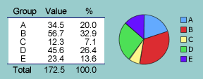
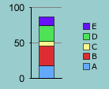
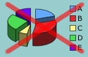

If the values in a simple table have a meaningful total and are therefore partitions of this total quantity, an alternative graphical display is a pie chart in which the area of each segment is proportional to its value.
The combined contribution of adjacent groups is easier to assess in a pie chart, but it is easier to compare individual groups in a bar chart, especially when there are many groups. Use the one that expresses the 'message' from the data most clearly.
Stacked bar chart
A related display is a stacked bar chart that colours sections of a rectangle instead of a circle. A stacked bar chart is no better than a pie chart for a single set of data, but is a useful way to compare several sets (next section).
Chartjunk
Three-dimensional versions of pie charts make the information harder to see and should be avoided.
Never split the picture of a 3-dimensional object